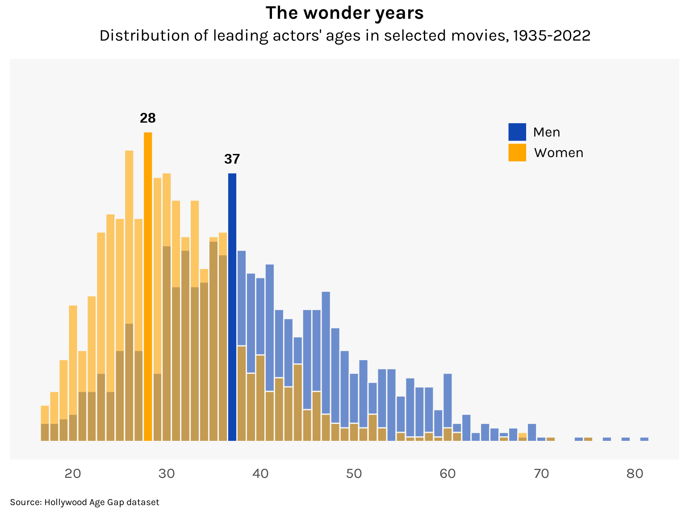

library(tidytuesday)
age_gaps <- tidytuesdayR::tt_load(2023, week = 7)$age_gapsThe standard age
At what age are we our “standard” selves, when we are neither too young nor too old?
histogram
line
A super spy races to stop terrorists from bombing a national landmark. A dour careerist falls in love with a reckless bohemian. A genius overcomes a disability to make revolutionary discoveries. A dorky scientist gains superpowers after a lab accident. When you picture these movie plots in your head, how old do you make the protagonist out to be?
We all have a sense of what the age of a “standard” adult is — the age when someone is neither too young nor too old, neither juvenile nor decaying, neither coming nor going. The age that a generic protagonist ought to be for a generic popcorn flick.
What is this age? We can get an idea by looking at the actual ages of actors cast in mainstream movies. For this, I use the Hollywood Age Gap dataset featured in this week’s TidyTuesday. We load it up as follows:
It contains actors’ ages for movies where they are part of a romantic couple. The dataset highlights the often egregious age gaps between men and their female love interests. For example, here is Humphrey Bogart:
library(tidyverse)
age_gaps %>%
filter(actor_1_name == "Humphrey Bogart") %>%
select(movie_name, release_year, actor_1_name, actor_1_age, actor_2_name, actor_2_age, age_difference) %>%
knitr::kable(align = "lclclcc")| movie_name | release_year | actor_1_name | actor_1_age | actor_2_name | actor_2_age | age_difference |
|---|---|---|---|---|---|---|
| Sabrina | 1954 | Humphrey Bogart | 55 | Audrey Hepburn | 25 | 30 |
| Beat the Devil | 1953 | Humphrey Bogart | 54 | Gina Lollobrigida | 26 | 28 |
| Dark Passage | 1947 | Humphrey Bogart | 48 | Lauren Bacall | 23 | 25 |
| Key Largo | 1948 | Humphrey Bogart | 49 | Lauren Bacall | 24 | 25 |
| The Big Sleep | 1946 | Humphrey Bogart | 47 | Lauren Bacall | 22 | 25 |
| To Have and Have Not | 1944 | Humphrey Bogart | 45 | Lauren Bacall | 20 | 25 |
| In a Lonely Place | 1950 | Humphrey Bogart | 51 | Gloria Grahame | 27 | 24 |
| Casablanca | 1942 | Humphrey Bogart | 43 | Ingrid Bergman | 27 | 16 |
| The African Queen | 1951 | Humphrey Bogart | 52 | Katharine Hepburn | 44 | 8 |
“Here’s looking at you kid” indeed.
But my focus right now is solely on the actors’ ages, so I reconfigure the dataset as follows:
df1 <- age_gaps %>%
select(movie_name:director,
actor = actor_1_name,
character_gender = character_1_gender,
actor_birthdate = actor_1_birthdate,
actor_age = actor_1_age
)
df2 <- age_gaps %>%
select(movie_name:director,
actor = actor_2_name,
character_gender = character_2_gender,
actor_birthdate = actor_2_birthdate,
actor_age = actor_2_age
)
df <- df1 %>%
bind_rows(df2) %>%
distinct() %>%
arrange(movie_name, actor_age)
df %>%
head() %>%
select(-director) %>%
knitr::kable(align = "lcllcc")| movie_name | release_year | actor | character_gender | actor_birthdate | actor_age |
|---|---|---|---|---|---|
| 10 Things I Hate About You | 1999 | Joseph Gordon-Levitt | man | 1981-02-17 | 18 |
| 10 Things I Hate About You | 1999 | Julia Stiles | woman | 1981-03-28 | 18 |
| 10 Things I Hate About You | 1999 | Larisa Oleynik | woman | 1981-06-07 | 18 |
| 10 Things I Hate About You | 1999 | Heath Ledger | man | 1979-04-24 | 20 |
| 13 Going on 30 | 2004 | Jennifer Garner | woman | 1972-04-17 | 32 |
| 13 Going on 30 | 2004 | Mark Ruffalo | man | 1967-11-22 | 37 |
This gives 2,103 entries on 1,031 unique actors. Because this was originally a couples dataset, there is an even split between men and women. It’s worth pointing out that the dataset seems to have been collected rather haphazardly. It’s mostly American films, though there are occasional foreign inclusions like Blue Is the Warmest Colour. For some reason, only five films each are included for 2020, 2021, and 2022 — this may have a bearing on the decade medians I compute below. Major films of the last three years like Tenet, Spider-Man: No Way Home, Shang-Chi, F9, and The Batman are inexplicably omitted.
With those limitations in mind, let’s see what the data say. Here is a histogram of actors’ ages, grouped by sex:
Code
library(ggplot2)
df %>%
ggplot(aes(x = actor_age, fill = character_gender)) +
geom_histogram(binwidth = 1, position = "identity", color = "gray97", alpha = .6) +
# Labels
labs(
title = "The wonder years",
subtitle = "Distribution of leading actors' ages in selected movies, 1935-2022",
caption = "Source: Hollywood Age Gap dataset"
) +
scale_x_continuous(breaks = seq(20, 90, 10)) +
scale_y_continuous(limits = c(0, 80)) +
geom_rect(xmin = 36.5, xmax = 37.5, ymin = 0, ymax = 59, fill = "#1046b1", color = "gray97") +
geom_rect(xmin = 27.5, xmax = 28.5, ymin = 0, ymax = 68, fill = "#ffa600", color = "gray97") +
annotate("text", label = "37", size = 12 / .pt, fontface = "bold", x = 37, y = 61, vjust = 0) +
annotate("text", label = "28", size = 12 / .pt, fontface = "bold", x = 28, y = 70, vjust = 0) +
# Themes
scale_fill_manual(
values = c("#1046b1", "#ffa600"),
labels = c("Men", "Women")
) +
guides(fill = guide_legend(
title = NULL,
override.aes = list(alpha = 1)
)) +
theme_minimal(base_family = "karla") +
theme(
plot.title = element_text(size = 16, face = "bold", hjust = .5),
plot.subtitle = element_text(size = 14, hjust = .5, margin = margin(b = 12)),
plot.caption = element_text(size = 8, hjust = 0, margin = margin(t = 15)),
axis.ticks = element_blank(),
axis.title = element_blank(),
axis.text.x = element_text(size = 12, margin = margin(t = 5)),
axis.text.y = element_blank(),
legend.position = c(.8, .8),
legend.text = element_text(size = 12),
panel.background = element_rect(fill = "gray97", color = NA),
panel.grid.major.x = element_blank(),
panel.grid.major.y = element_blank(),
panel.grid.minor.x = element_blank(),
panel.grid.minor.y = element_blank()
)
Hollywood’s idea of the standard age clusters at around 37 for men and 28 for women (implying that the standard age gap for romantic couples is 9). Some examples are, for men: Russell Crowe in A Beautiful Mind, George Clooney in Out of Sight, Jack Nicholson in Chinatown, Robert De Niro in Raging Bull, Gregory Peck in Roman Holiday; and for women: Robin Wright in Forrest Gump, Marisa Tomei in My Cousin Vinny, Demi Moore in Ghost, Meg Ryan in When Harry Met Sally, Léa Seydoux in Blue Is the Warmest Color.
Times seem to be changing, however, as the median ages of actors have been rising over the decades. The median actress, in particular, is the oldest she’s ever been (though with the caveat mentioned above that unusually few 2020s films are in the dataset).
Code
df %>%
mutate(decade = plyr::round_any(release_year, 10, floor)) %>%
group_by(decade, character_gender) %>%
summarize(actor_age = median(actor_age)) %>%
ungroup() %>%
ggplot(aes(x = decade, y = actor_age, group = character_gender, fill = character_gender, color = character_gender)) +
geom_line(linewidth = 1) +
geom_point(size = 7.5, shape = 21, stroke = 1.5, color = "gray97") +
geom_text(aes(label = round(actor_age)),
family = "karla", size = 9 / .pt, fontface = "bold", color = "white"
) +
# Labels
labs(
title = "Signs of aging",
subtitle = "Median age of leading actors by decade",
caption = "Source: Hollywood Age Gap dataset"
) +
scale_x_continuous(breaks = seq(1930, 2020, 10)) +
scale_y_continuous(limits = c(20, 53)) +
guides(color = guide_legend(title = NULL), fill = FALSE) +
# Themes
scale_fill_manual(
values = c("#1046b1", "#ffa600"),
labels = c("Men", "Women")
) +
scale_color_manual(
values = c("#1046b1", "#ffa600"),
labels = c("Men", "Women")
) +
theme_minimal(base_family = "karla") +
theme(
plot.title = element_text(size = 16, face = "bold", hjust = .5),
plot.subtitle = element_text(size = 14, hjust = .5, margin = margin(b = 12)),
plot.caption = element_text(size = 8, hjust = 0, margin = margin(t = 15)),
axis.ticks = element_blank(),
axis.title = element_blank(),
axis.text.x = element_text(size = 12, margin = margin(t = 5)),
axis.text.y = element_text(size = 12, margin = margin(r = 5)),
legend.position = c(.75, .85),
legend.text = element_text(size = 12),
panel.background = element_rect(fill = "gray97", color = NA),
panel.grid.major.x = element_blank(),
panel.grid.major.y = element_blank(),
panel.grid.minor.x = element_blank(),
panel.grid.minor.y = element_blank()
)This idea of a standard age has some grounding in developmental psychology. Clare Mehta and her colleagues coined the term “established adulthood” to refer to our 30s and early 40s, a period in our lives that most look back on — or look forward to — as their golden years. She writes:
People talked about being in the prime of their lives and feeling at their peak. After years of working to develop careers and relationships, people reported feeling as though they had finally arrived.
If you who are reading this are an established adult, or even better, are close to the Hollywood standard age, then feel free to defeat some terrorists, fall in love with a bohemian, or gain some superpowers. This time in your life calls for it.